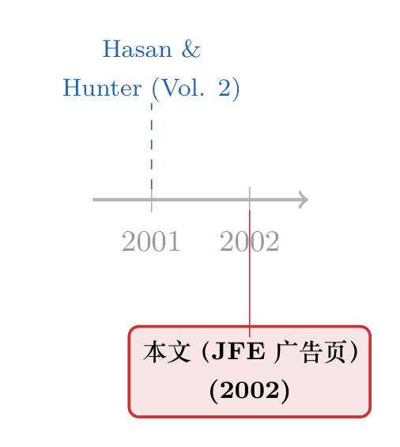

夹在顶刊里的一页书单：从一则 2001 年的银行业研究广告，看一门学科的心事
本文读的不是一篇论文，而是 JFE (2002) 正文里夹着的一页广告：爱思唯尔在为一本叫 Research in Banking and Finance, Volume 2 的论文集（2001，I. Hasan 与 W. Hunter 主编）招徕买家。它没有数据、没有识别策略、没有一个系数。但把这张 320 页、定价 95 美元的书单逐条读下去，你会得到一张关于「2001 年的银行业研究在操心什么」的快照——而其中一行作者名字，恰好写着 J. He。
1 一个奇怪的「研究对象」
先说一句老实话：这一次，我们手里根本没有论文。
你翻开 2002 年的某一期《Journal of Financial Economics》，本以为会撞见一份双重差分 (difference-in-differences, DiD)、一组工具变量 (instrumental variable, IV)、或者至少一张回归表。结果你撞见的，是一整页广告——爱思唯尔（Elsevier Science）在推销一套丛书的第二卷：Research in Banking and Finance, Volume 2。页脚甚至老老实实印着纽约和阿姆斯特丹两个区域销售办公室的电话、传真、邮箱，连美加免费咨询热线 1-888-4ES-INFO 都给了你。
这就尴尬了。一篇「论文评述」，评的却是一张书单。
但请先别急着合上。这类「非论文」在这个博客里其实评过不少——从一页过刊目录，到一份编委名单，再到一封主编的年终报告（顺带一提，类似的「数字考古」启事可参见《一页夹在顶刊里的广告：当尘封的「过刊」第一次被标上价格》）。它们的共同点是：正文里什么都没说，但它们的存在本身就在说话。一张 2001 年的银行业研究书单，恰恰是一份难得的「田野样本」——它替我们记下了，在金融危机模型还没成为显学、巴塞尔 II 尚在襁褓的那个年份，一群顶尖学者认为「值得写进一本书」的，到底是哪些问题。
于是这页广告，反而成了一个值得认真读的对象。
2 这张书单到底卖的是什么
先把基本事实摆清楚。这本书是丛书 Research in Banking and Finance 的第二卷，2001 年精装出版（Year 2001 Hardbound），ISBN: 0-7623-0844-3，320 页，定价 USD 95 / EUR 95。两位主编一位来自学界——I. Hasan，新泽西理工学院（New Jersey Institute of Technology, NJIT）；一位来自监管前线——W. Hunter，芝加哥联储（Federal Reserve Bank of Chicago）。
广告里有一句话值得划重点：这一卷收录的，是「美国与欧洲顶尖研究者」撰写的理论与实证并陈的文章，主题横跨资产定价、公司治理、股利政策、金融服务定价、组合理论、利率风险、资本结构、多元化策略与信用风险建模；此外还特意点明，其中两篇是由现职监管者从监管视角写的应用文章。
学界 + 监管者合编、理论 + 实证并陈、研究 + 应用混排——这个配置本身，就是「银行业研究」这门学科的体质：它天生站在象牙塔和监管办公室的交界线上。
3 把目录逐条读下去：一门学科的心事
真正有意思的，是那张目录（Contents）。让我把它当成一份问卷来读——每一条标题，都是一位作者对「2001 年最该研究什么」的投票。
首先，是绕不开的「篮子」问题。 两篇文章几乎正面对撞：一篇是 B. Wilson 与 G. Caprio Jr. 的 Eggs in too few baskets: The impact of loan concentration on bank-sector systematic risk——贷款集中度如何抬高整个银行部门的系统性风险；另一篇是 A. Resti 基于意大利银行数据的 The risk/return effects of loan portfolio diversification——贷款组合分散化到底是不是免费的午餐。一个问「鸡蛋放太少篮子有多危险」，一个问「多分几个篮子到底划不划算」。这恰恰是银行业风险研究最古老、也最顽固的一根主线，二十年后我们仍在争论它（关于分散化在银行体系里未必总是好事，可参见《银行业的「集中」，为什么反而是一道稳定阀？》与《异质性，反而是金融体系的「稳定器」？》）。
接着，一个自然的问题是：危机来了，账会落到谁头上。 B. Vale 的 Firms' inventory investments, financial conditions and banking crisis，把银行危机一路传导到企业的存货投资上——这是「银行出事、实体遭殃」这条因果链在 2001 年的写法（这条链后来被反复重做，挪威危机的版本可参见《银行成片倒下，公司却几乎毫发无伤》）。
然后，是欧洲转型经济体的资本结构与信贷可得性。 L. Weill 的 Determinants of leverage and access to credit: Evidence on western and eastern European countries，把东欧与西欧并排比较杠杆与信贷准入；A. Hasmati 的 The Dynamics of capital structure: Evidence from Swedish micro and small firms，盯着瑞典微型与小企业的资本结构动态。2001 年，东欧转型方兴未艾，「制度差异如何写进企业的借钱方式」正是当年的热题。
但真正点出这门学科底色的，是那两篇信用风险文章。 C. Zazzara 的 Credit risk in the traditional banking book，研究的是「传统银行账户」里的信用风险——注意这个「traditional banking book」的提法：它恰恰站在巴塞尔 II 与信用风险内部模型法即将登场的前夜。今天我们用机器学习给公司债违约定价、用结构模型拆信用利差，而这本书里，信用风险还安静地待在「传统银行账户」这个词里（关于这条线后来走到了哪儿，可参见《把机器学习的黑箱拆成玻璃箱：公司债收益率能被「看懂」地预测吗？》）。
目录里当然还有更偏资产定价的篇目：V. Madrigal 与 S.D. Smith 的 On equilibrium asset prices when markets are incomplete（不完全市场下的均衡资产价格）、O. Jokung 的 The effects of background risk on optimal portfolios（背景风险对最优组合的影响）、J.R. Lothian 与 C. McCarthy 的 Equity returns and inflation: The puzzling long lags（股票收益与通胀之间那条令人困惑的长滞后）。还有 S.A. Ravid 与 M. Spiegel 的 Managers block-holders and takeovers、L.B. Nelson 的 Dividend policy and clientele rationality、J. Tarkka 的 Pricing of transaction services: The distortionary effects of taxation——治理、股利、定价，一个都不少。
把这十几条标题叠在一起，你会发现这本书其实没有一个「单一主题」。它更像一张横截面：在 2001 这一个时间点上，银行与金融研究的注意力，是怎样分布的。
4 一个藏在目录里的彩蛋
读到这里，我得停下来指一件事。
目录的中段，有这么一行：
Swapping default risk for interest rate risk: The rise of fixed rate mortgage loans in Hong Kong (J. He, M. Lu)
J. He。
——当然，这位 2001 年研究香港固定利率按揭兴起的 J. He，几乎可以肯定不是写这篇博客的我。但作为一个同样姓 He、同样在做按揭与信用风险研究的人，在一张二十多年前的顶刊广告里看到自己的名字缩写挂在一篇「用违约风险换利率风险」的论文上，这种隔着时间的巧合，多少有点令人会心一笑。
而且这篇标题本身，正好浓缩了银行业研究的精髓：固定利率按揭的兴起，不是凭空发生的，它是借款人和银行在违约风险与利率风险之间做的一次交换——把一种风险换成另一种风险（关于「换风险」这件事在按揭市场的现代版本，可参见《被自己 3% 的房贷「锁」在原地》）。一行标题，就是一道资本结构题。
5 文献脉络：广告，作为一种学科切片
说回这页广告本身的「学术史」位置。
它属于一类我一直觉得被低估的史料：没有研究内容，却有研究价值的页面。一张过刊目录、一份编委名单、一页丛书广告——它们不生产知识，但它们像地层里的同位素，替我们标定了某个年份的学科状态。这本 Research in Banking and Finance 是「第二卷」，意味着背后有一套持续运作的、专门服务银行业研究的出版机制；它由一位学者和一位联储官员合编，意味着这门学科的供给侧本身就是「学界 + 监管」的合资企业。

把它放进时间轴看就更清楚：2001 年，这一卷精装出版；2002 年，它的广告被排进了 JFE 的版面。一前一后，记录的不是某个发现，而是一门学科如何把自己组织起来、又如何向同行推销自己。从这个角度，这页广告和它评述的那些「正经论文」，其实是同一段学术史的正反两面。
6 评论与延伸（Q&A + 研究方向）
(a) 几个可能的疑问
Q：这根本不是论文，为什么还要认真评？
因为它是史料。一篇论文告诉你「某个问题的答案」，而一张 2001 年的银行业书单告诉你「当年大家认为哪些问题值得问」。后者是前者的元数据。把十几条标题当成一次注意力的横截面投票来读，你能看到资本结构、贷款集中度、信用风险、转型经济体信贷这些主线，在二十多年前就已经成形——这本身就是有信息量的。
Q：从这张目录能不能可靠地推断「2001 年银行业研究的全貌」？
不能，而且要非常小心。这是一本书、一套丛书、两位主编的选择，存在严重的选择偏差：它偏应用、偏欧洲数据、偏「学界 + 监管」的口味。它能告诉你「这群人关心什么」，但不能代表整个领域的分布。把它当成一个有偏的样本点，而不是总体。
Q：「用违约风险换利率风险」这个说法，到底是什么意思？
固定利率按揭里，借款人锁定了月供，把利率上行的风险转移给了放贷方；而浮动利率按揭则相反，借款人自己扛利率风险，但在某些设计下违约风险的结构会不同。所谓「swapping default risk for interest rate risk」，讲的就是在合约设计里，这两类风险并非各自独立，而是可以互相替换、此消彼长。
Q：为什么强调「traditional banking book」这个词？
因为它有时代印记。「banking book」（银行账户）与「trading book」（交易账户）的区分，是巴塞尔资本监管框架的核心；而「traditional」一词暗示，2001 年的信用风险研究还主要落在持有到期的贷款账户上，尚未被后来的信用衍生品、证券化和内部评级模型彻底重塑。一个词，标定了一个年代。
Q：学者和监管者合编一本书，会不会损害研究的独立性？
这是个真问题，但也是这门学科的常态而非例外。银行业研究天然依赖监管者掌握的数据（监管报表、检查记录），代价是议题可能被政策关切牵引。这页广告甚至明说有两篇是「现职监管者从监管视角写的应用文章」——它没有藏着掖着，反而把这种「合资」属性当成卖点。
Q：今天还有必要读这种二十多年前的论文集吗？
作为前沿，多半没必要——里面的方法和数据都老了。但作为坐标很有用：当你想知道某条研究线（比如贷款分散化与系统性风险）是从哪儿长出来的，回头看一眼 2001 年大家是怎么提问的，能帮你判断今天的「新发现」到底有多新。
(b) 几个可能的研究问题与提案
1. 把「广告/目录」做成学科注意力的长面板。
【经济故事】顶刊和丛书里的广告、目录、专辑征稿，构成了一条几乎从未被系统利用的「学科注意力」数据流。把几十年的目录标题做文本分析，可以量化银行业研究的主题如何随危机、监管改革、数据可得性而迁移。
【可行性】中。文本和元数据公开可得（期刊目录、丛书 ISBN 记录），主题建模与词频分析技术成熟；难点在于构建一致的主题词典和处理选择偏差。识别上偏描述性，但作为「学科史」论文足够。
2. 重做「贷款集中 vs. 分散」之争，用现代信用数据。
【经济故事】这本书里 Wilson-Caprio 和 Resti 正面对撞的问题——贷款集中究竟是放大系统性风险，还是分散化反而削弱了银行的信息优势——至今没有定论。用今天颗粒度更细的银行-借款人层面信贷数据，可以重新检验。
【可行性】中到高。美国 Y-14、欧洲 AnaCredit 等监管信贷登记数据提供了银行层面的组合明细；识别可借助局部经济冲击作为外生的集中度变动来源。数据准入是主要门槛。
3. 固定 vs. 浮动按揭的「风险互换」，跨国再检验。
【经济故事】沿着那篇香港固定利率按揭论文的思路：在不同利率环境与监管制度下，借款人和银行如何在违约风险与利率风险之间做权衡？这条线在近年「利率锁定效应」研究里重新变热。
【可行性】高。多国按揭层面数据日益可得，利率周期的转向（如近年加息）提供了天然的时间变异；识别可用利率冲击或监管规则差异。是 doable 的实证题。
4. 「学界 + 监管」合著，会不会改变论文的议题与结论？
【经济故事】这本书的「合资」属性提出了一个元问题：当论文有监管者署名时，它的议题选择、政策结论、对监管有效性的评价，是否系统性地不同于纯学界论文？
【可行性】中。可在大样本银行业论文上标注作者的机构归属（央行/监管机构 vs. 大学），用文本分析衡量结论倾向；难点是把「议题选择」与「数据可得性」这两个混淆因素分开，识别需要谨慎。
7 我的判断
说到底，这页广告作为「研究对象」的价值，恰恰在于它不是研究。
它的贡献是史料性的：在金融危机宏观建模、信用衍生品定价、巴塞尔 II 内部模型法全面铺开之前，它替我们冻结了 2001 年银行业研究的一帧画面——贷款集中度、组合分散化、银行危机的实体传导、转型经济体的信贷可得性、传统账户里的信用风险。这些主线，今天一条都没消失，只是换了更锋利的方法重做了一遍。
至于「识别」，这里无从谈起——它没有因果主张，自然也没有对识别的威胁。如果非要说它的「内部效度」短板，那就是选择偏差：一本书、两位主编的口味，不能代表整个领域；把它当成总体的人，会被它误导。
我接下来想看到的，是有人真把这类「非论文」当成数据来用——把几十年的顶刊目录、丛书广告、专辑征稿做成一条可量化的「学科注意力」时间序列。那样的话，今天这一页看似毫无内容的广告，就会从一则被翻过去的招徕，变成一个有坐标的数据点。
毕竟，连一行 J. He 的署名，隔着二十多年，都还能讲出一个关于「换风险」的故事。
参考文献
- Hasan, I., & Hunter, W. (Eds.) (2001). Research in Banking and Finance, Volume 2. Elsevier Science. ISBN 0-7623-0844-3.
- Wilson, B., & Caprio, G. Jr. Eggs in too few baskets: The impact of loan concentration on bank-sector systematic risk. In Research in Banking and Finance, Vol. 2.
- Resti, A. The risk/return effects of loan portfolio diversification: An empirical test based on Italian banks. In Research in Banking and Finance, Vol. 2.
- He, J., & Lu, M. Swapping default risk for interest rate risk: The rise of fixed rate mortgage loans in Hong Kong. In Research in Banking and Finance, Vol. 2.
- Vale, B. Firms' inventory investments, financial conditions and banking crisis. In Research in Banking and Finance, Vol. 2.
- Weill, L. Determinants of leverage and access to credit: Evidence on western and eastern European countries. In Research in Banking and Finance, Vol. 2.
- Zazzara, C. Credit risk in the traditional banking book. In Research in Banking and Finance, Vol. 2.